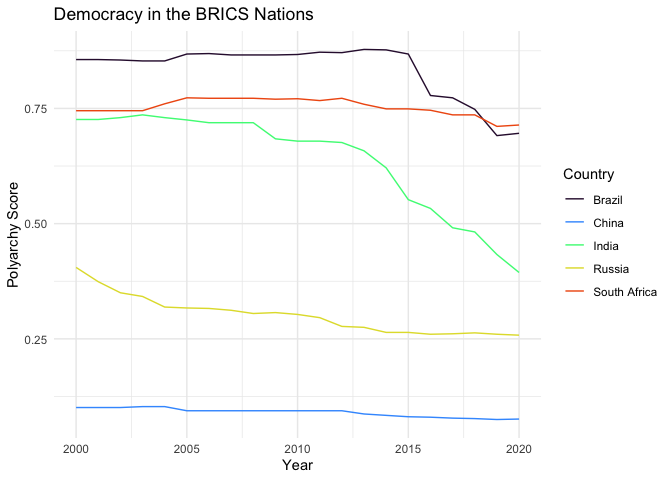

vdemlite provides a lightweight version of the Varieties of Democracy (V-Dem) dataset that incorporates many of the core measures of V-Dem for the contemporary period and is easy to work with in R. The package provides functions for downloading and loading the data, as well as for exploring the data and searching for particular indicators.
vdemlite addresses two challenges that arise with the using full dataset. First, it can be readily used in cloud and production environments like Posit Cloud and shinyapps.io without having to purchase additional computing resources. Second, it provides user-friendly functions and arguments that makes it easier to download, filter, and explore the data in R. The goal is to make the dataset more accessible to new users who may not have completely developed a wrangling workflow and more convenient for more advanced users who frequently use V-Dem for contemporary analysis.
The indicators included in vdemlite are taken from the Structure of V-Dem Indices, Components and Indicators document that is in turn drawn from Appendix A of the V-Dem codebook. It includes all of these indices and indicators plus some background factors a few additional commonly-used indicators. The dataset covers 1970 to the present and includes all countries in the V-Dem dataset.
Installation
You can install the development version of vdemlite from GitHub with:
# install.packages("pak")
pak::pkg_install("eteitelbaum/vdemlite")How to Use vdemlite
vdemlite has three functions: fetchdem(), summarizedem(), and searchdem().
fetchdem() is the main function that downloads the V-Dem data and loads it into R. Within fetchdem(), you can specify one or more V-Dem indexes or indicators along with the years and countries you are interested in. The function will download the data and return a tibble with the specified indexes and indicators.
Let’s grab the polyarchy score for the BRICS countries between 2000 and 2020.
library(vdemlite)
# Grab the polyarchy scores for the United States between 2000 and 2020
brics_dem <- fetchdem(indicators = "v2x_polyarchy",
start_year = 2000, end_year = 2020,
countries = c("BRA", "RUS", "IND", "CHN", "ZAF"))Now we can visualize the scores using ggplot2 (or do whatever we want to do with them!).
library(ggplot2)
ggplot(brics_dem, aes(x = year, y = v2x_polyarchy, color = country_name)) +
geom_line() +
labs(title = "Democracy in the BRICS Nations",
x = "Year",
y = "Polyarchy Score") +
scale_color_viridis_d(name = "Country", option = "turbo", end = .8) +
theme_minimal()
You can also retrieve data for multiple indicators by using the combine function c() just like we did when we specified multiple countries. fetchdem also includes functionality for retrieving groups of indicators as they relate to the structure and aggregation of the V-Dem dataset. See the documentation for details.
If you want a quick summary of an indicator or set of indicators, summarizedem() will provide a searchable HTML table with summary statistics as well as info on the missing data (grouped by country) for the specified indicators. summarizedem() can be used with the same arguments as fetchdem(), e.g. indicators, start_year, end_year, and countries.
Finally, you can use searchdem() to find specific indicators or all of the indicators used to construct an index. For example, we can use searchdem("v2x_civlib") to find all of the indicators used to construct the V- Dem civil liberties index. searchdem() without any arguments produces a searchable HTML table of all indicators in the dataset.